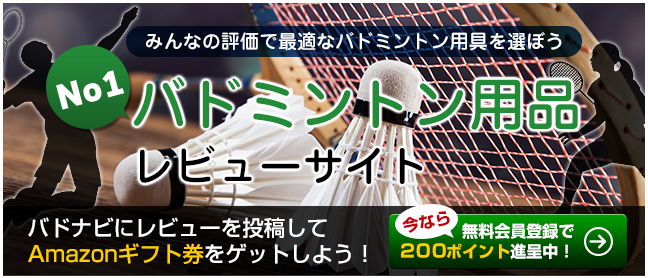

卓球ナビへようこそ！
レビューを投稿して商品券をゲットしませんか？


ラケットを探す
- メーカーから探す
- バタフライ
- Nittaku
- TSP
- Yasaka
- VICTAS
- STIGA
- 紅双喜
- XIOM
- DONIC
- ミズノ
- TIBHAR
- Joola
- andro
- adidas
- アームストロング
シャトルを探す
最新レビュー
-
-
- 卓球部 （ラウンデル・ハードへのレビュー）
すごい良いラバーだと思う。ドライブはすごい入れやすいです。4200円とは思えない高性能ハードといってもそんな硬くない。基本どのラケットにも合うと思う。...
-
最安値 2,874円
- 卓球部 （ラウンデル・ハードへのレビュー）
-

-

- リリリ （テナジー・０５へのレビュー）
回転がすごいです。繋ぎのループドライブで点が取れますただし値段が高いです
-
最安値 7,282円
- リリリ （テナジー・０５へのレビュー）
-

- コアラ高橋 （VICTAS VS＞401へのレビュー）
サーブが切れやすく、おもいっきり切るとデスカットっぽいのもでるのでカットの基本ができているにお勧めだと思います。...
-
最安値 3,672円
- コアラ高橋 （VICTAS VS＞401へのレビュー）
-

- テナジーなにそれ美味しいの （ブースター ＥＶへのレビュー）
とても弾んで速いです。また通常のスピード系表と比べて落ちる感覚が少ないです。ただ弾みが強すぎる・コントロールしにくい と感じる時もあります。表初心者...
-
最安値 3,129円
- テナジーなにそれ美味しいの （ブースター ＥＶへのレビュー）
-


トップ選手使用ラバー、ラケット


新着ムービー
新着ニュース
-

- 男女銀メダルの日本チームが帰国後、笑顔の記者会見
- 6日に終わった世界選手権クアラルンプール大会で活躍を見せた日本チームが、大勢のファンと報道陣が出迎える中、昨日16時頃成田空港 2016/00/00
-
- 男女銀メダルの日本チームが帰国後、笑顔の記者会見
- 6日に終わった世界選手権クアラルンプール大会で活躍を見せた日本チームが、大勢のファンと報道陣が出迎える中、昨日16時頃成田空港 2016/00/00
-
- 男女銀メダルの日本チームが帰国後、笑顔の記者会見
- 6日に終わった世界選手権クアラルンプール大会で活躍を見せた日本チームが、大勢のファンと報道陣が出迎える中、昨日16時頃成田空港 2016/00/00
-
- 男女銀メダルの日本チームが帰国後、笑顔の記者会見
- 6日に終わった世界選手権クアラルンプール大会で活躍を見せた日本チームが、大勢のファンと報道陣が出迎える中、昨日16時頃成田空港 2016/00/00
今日の選手
ブラディミル・サムソノフ

-

- ラケット
-

- ラバー（表面）
-
- ラバー（裏面）
- 【1Qを使っていた時期もあり】
ランキング
ラバーランキング もっと見る
-

- 1位 評価: 14.29 / 15
- 最安値：5,082円
-

- 2位 評価: 14.20 / 15
- 最安値：3,434円
-

- 3位 評価: 14.13 / 15
- 最安値：4,491円
-

- 4位 評価: 14.08 / 15
- 最安値：3,813円
-

- 5位 評価: 14.00 / 15
- 最安値：7,282円
ラケットランキング もっと見る
-

- 1位 評価: 15.00 / 15
- 最安値：20,690円
-

- 2位 評価: 15.00 / 15
-

- 3位 評価: 14.50 / 15
- 最安値：5,614円
-

- 4位 評価: 14.33 / 15
- 最安値：8,667円
-

- 5位 評価: 14.29 / 15
ユーザーランク
月刊ランキング もっと見る

- 1位 ビギナー
- 7922
-
- 2位 脱・初心者
- 6922
-
- 3位 ビギナー
- 7922

- 4位 ビギナー
- 7922
-
- 5位 ビギナー
- 6922
総合ランキング もっと見る
-
- 1位 ビギナー
- 7922
-
- 2位 脱・初心者
- 6922
-
- 3位 ビギナー
- 7922
-
- 4位 ビギナー
- 7922
-
- 5位 ビギナー
- 6922
卓球ニュース
- 卓球大会に爆破予告、威力業務妨害容疑で捜査 - TBS News
- 【卓球】愛、練習合間に「まつ毛パーマ」初挑戦「いろいろと上げていければ」 - BIGLOBEニュース
- 【卓球】愛、練習合間に「まつ毛パーマ」初挑戦「いろいろと上げていければ」 - スポーツ報知
- 卓球部 祝賀会が行われる／優勝祝賀会 - 明大スポーツＷＥＢ
- 桶ット卓球の愛好家 世界進出へ催しや大会企画 - 神戸新聞
- 【卓球】１５歳・伊藤と吉村、追加で派遣 リオ五輪アジア予選 - 産経ニュース
- 伊藤と吉村を追加派遣 卓球のリオ五輪アジア予選 - 日本経済新聞
- 中学卒業の美誠、高校では「チームを全国一に導きたい」／卓球（サンケイスポーツ）
- 卓球の伊藤美誠選手、中学校の卒業式に出席 - TBS News
- 卓球の伊藤美誠選手が中学卒業 世界団体で準優勝 - 中日新聞